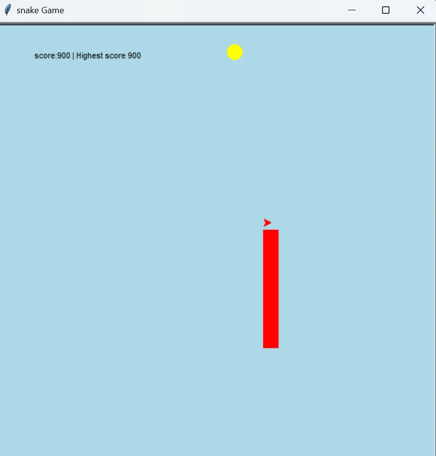

Open to Java backend roles
Hi, I'm Karan Kumar I build REST APIs with Spring Boot
Java-focused engineer with 7+ months at Infosys, designing Spring Boot microservices, wiring them to PostgreSQL, and covering them with JUnit, Mockito and Rest Assured. I care about APIs that are correct, documented and actually tested.

- 0months at Infosys
- 0REST APIs built
- 0API tests automated
- 0API coverage reached
01 — About
Backend engineer with a tester's eye
I started out building interfaces — HTML, CSS and JavaScript — and that's still where my eye for detail comes from. Today I work on the other side of the wire: Java 17, Spring Boot and PostgreSQL, designing REST APIs and microservices that hold up under real traffic and real reviewers.
At Infosys I wrote Java automation that validated request/response payloads, status codes, headers, auth and business rules across 150+ API scenarios — so I learned early what makes an API pleasant to consume, and I design mine with that in mind.
I'm based in Bangalore, graduated in Electronics & Communication Engineering from SLIET Punjab, and I'm currently looking for Java / Spring Boot backend roles.
02 — Skills
Tools I reach for
Spring ecosystem
Backend
Databases
Testing & tooling
AI & frontend
03 — Experience
Where I've worked
Systems Engineer — QA Automation
Sep 2025 – Apr 2026Infosys Limited · Bangalore, India
- Built and maintained Java-based REST API automation, validating request/response payloads, status codes, headers, authentication and business rules.
- Designed and executed 150+ automated API test cases with Java and Rest Assured — reaching 90%+ API coverage and catching 25+ critical pre-production defects.
- Ran SQL backend validation across 20+ database tables, verifying API responses against persisted data.
- Created a scalable Selenium framework (Page Object Model, TestNG, Maven) that cut manual testing effort by 45%.
- Integrated suites into Jenkins CI/CD and collaborated in Agile/Scrum teams using Git.
Summer Intern
2022Bharat Intern
- Worked through a guided web development internship, shipping small front-end builds end to end.
Summer Trainee
2022 – 2023Software Services Solution
- Trained on software delivery fundamentals and programming practices alongside coursework.
04 — Education
Academic background
B.E. — Electronics & Communication Engineering
2021 – 2025Sant Longowal Institute of Engineering and Technology (SLIET), Punjab
CGPA 8.16 / 10
Senior Secondary (10+2)
2019 – 2021Gyan Bharti Senior Secondary School, Raniganj, Tekari
Schooling
2006 – 2018R.D. Public School, Vikram Vihar, Tekari, Gaya
05 — Projects
Things I've built
Backend systems, automation frameworks, and a few things I made just because they were fun.
AI-Powered Healthcare Service Management Platform
A microservices healthcare platform with separate Patient, Appointment, Notification and AI Assistant services. 25+ RESTful APIs for patients, doctors, scheduling and authentication, secured with Spring Security + JWT and role-based access for ADMIN, DOCTOR and PATIENT users. Spring AI classifies service requests through the OpenAI API.
View codeREST API Automation & Database Validation Framework
Reusable automation for CRUD operations, authentication, response validation and database-backed transactions — with data-driven testing and SQL checks that verify REST responses against the records actually persisted.
View code
Face Recognition Attendance System
Attendance software that recognises students' faces and records attendance automatically, with modules for student records, model training, photo datasets and a help desk.

Cara — Ecommerce Storefront
A responsive storefront with a hero banner, product categories, cart and account flows, built to stay readable from a 320px phone up to a desktop.

Hamro College
A college website with course browsing, departments, a blog and login/register flows — designed around a search-first layout.

FoundBook — Lost & Found Portal
A campus lost-and-found board where people post items they've found and search for things they've lost, with photo listings and a lightweight search index.

Smart Ambulance with GPS
An Arduino + GSM/GPS prototype that streams an ambulance's live location over SMS so a hospital can prepare before the patient arrives. Real hardware, hand-wired.

Tic-Tac-Toe
A clean browser take on the classic — win detection, turn tracking and a reset, in plain JavaScript with no libraries.

Snake Game
A score-tracking snake game written in Python — collision detection, growing tail and a persistent high score.
No projects in this category yet.
06 — Certificates
Courses I've completed
Click any certificate to view it full size.
Introduction to C++
Coding Ninjas · Sep – Oct 2022
Top Performer
Learn C++ Programming — Beginner to Advanced
Udemy · Jan 2022
30.5 hours
HTML in Hindi
Great Learning Academy · Jul 2022
Completed
07 — Contact
Let's build something
I'm open to Java / Spring Boot backend roles and interesting freelance work. I reply fast.
- Emailkk4447058@gmail.com
- Phone+91 87572 80393
- GitHub@Karankumarweb
- Based inBangalore, India